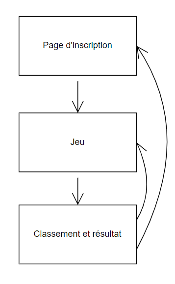
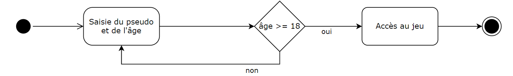
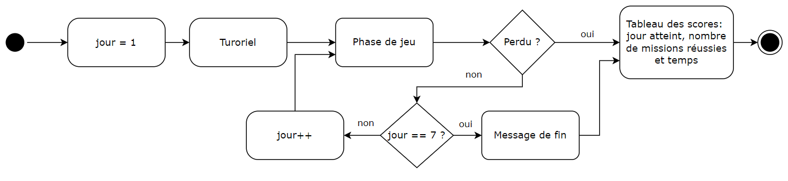
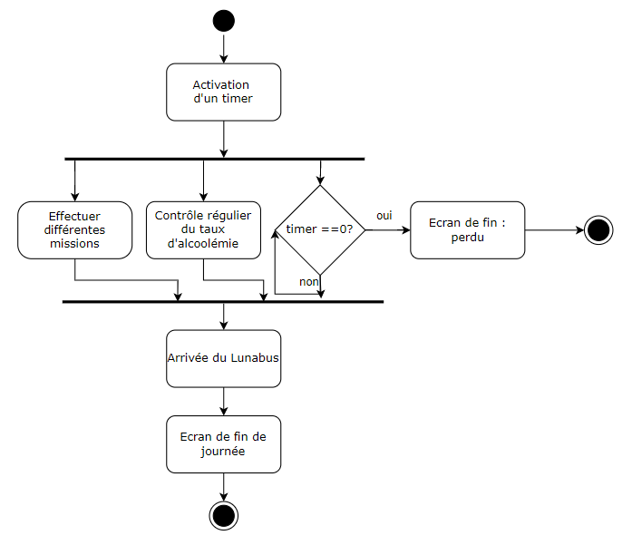
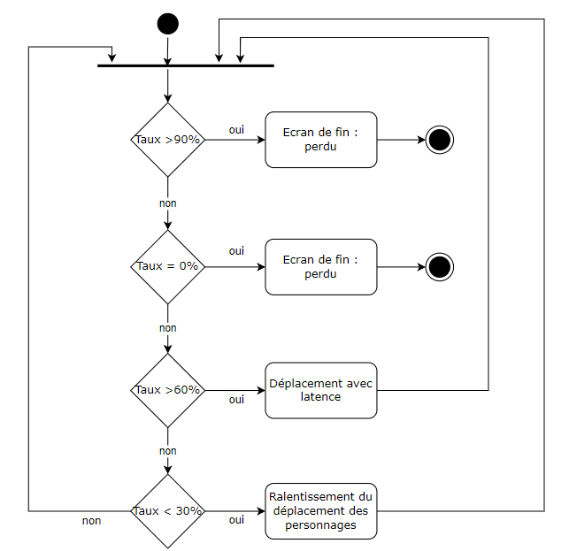
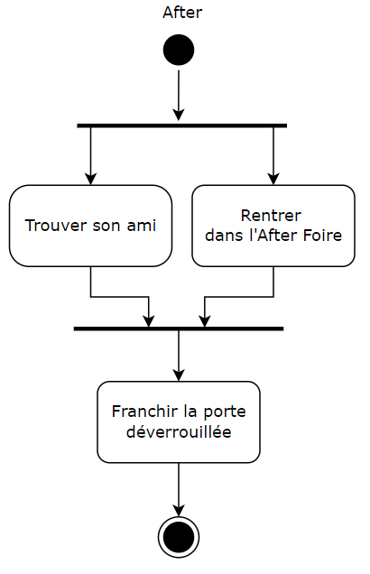
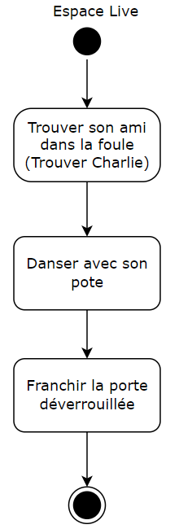
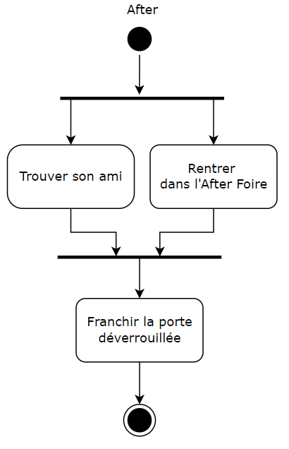
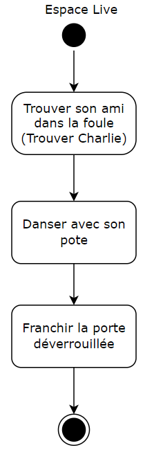

Flux et sitemap du jeu
Site map du site du jeu
Nous prévoyons de faire 3 pages. Une page qui permet de s'inscrire avant de rentrer dans le jeu. La page suivante contiendra le jeu. Une dernière page qui contiendra le résultat des autres et le nôtre. Depuis la page de résultat on pourra refaire le jeu ou retourner à la page d'inscription.
Entrée dans le jeu
Pour commencer à jouer, le pseudo ainsi que l'âge du joueur doivent être renseignés. Si l'utilisateur est mineur, il reviendra sur la page du formulaire.
Déroulement général du jeu
Le jeu prévoit 7 niveaux, soit un niveau par jour. En cas d'échec à un des jours, le joueur perd et le tableau des scores est affiché. En cas de victoire avec la réussite des 7 jours prévu un écran de fin s'affiche et l'utilisateur est dirigé vers le tableau des scores.
Déroulement d'une journée dans le jeu
Dans une journée au comptoir, il faudra accomplir différentes missions décrites plus loin. Durant ces missions, il sera nécessaire d'aller assez vite pour ne pas rater le luna bus et surtout penser à boire assez, mais pas trop pour éviter les malus ou l'élimination.
Gestion du taux d'alcoolémie
Il est prévu de contrôler régulièrement le taux d'alcoolémie du joueur. S'il atteint certaine limite, il aura des malus ou pire il perdra le jeu.
Déroulement des missions
Nous avons défini différentes missions avec plusieurs tâches à effectuer. Lors de journées différentes, des missions similaires peuvent réapparaître.
 


